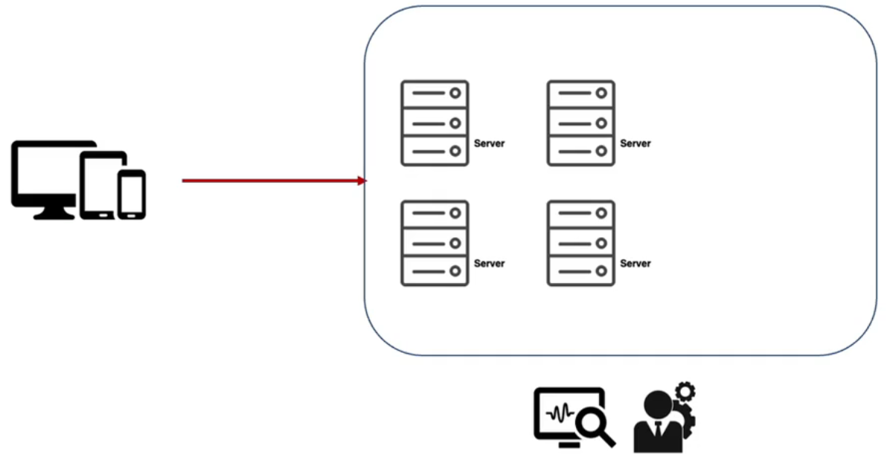
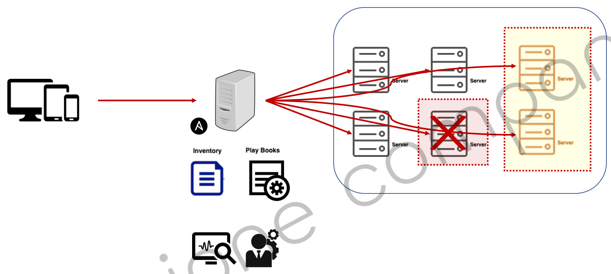
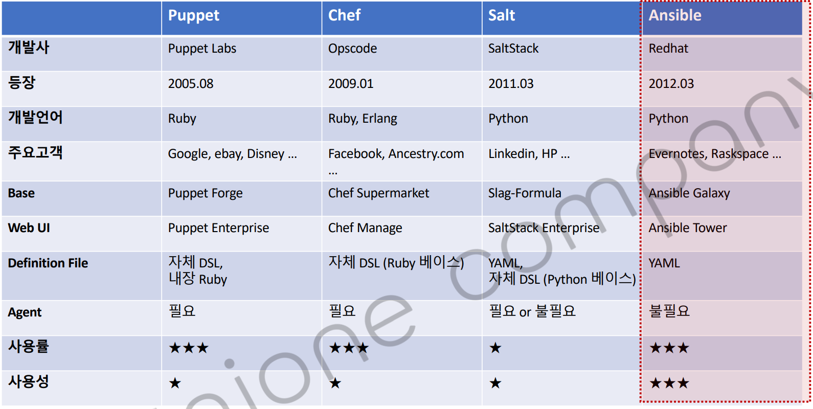
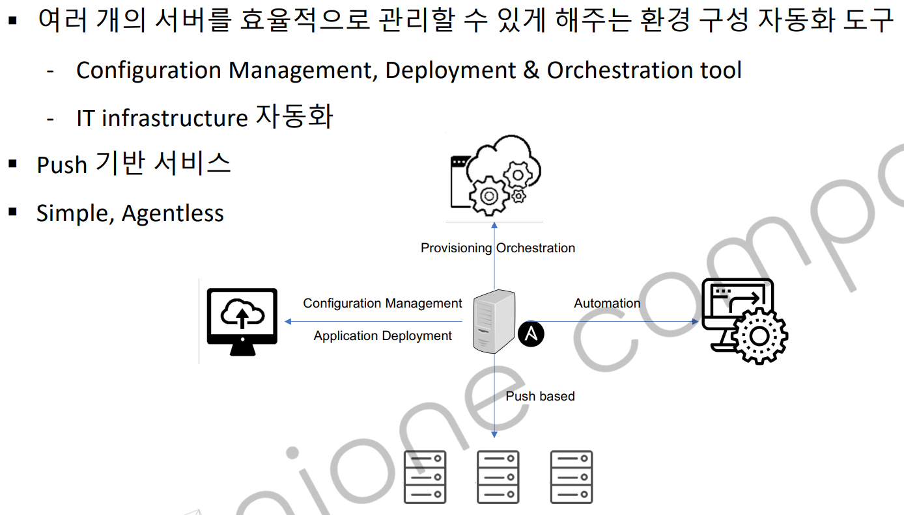
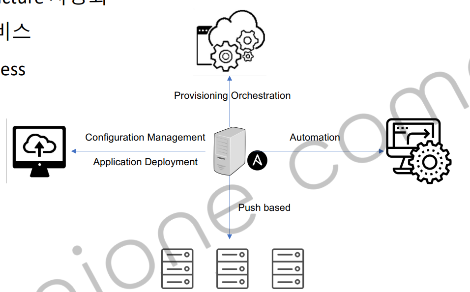
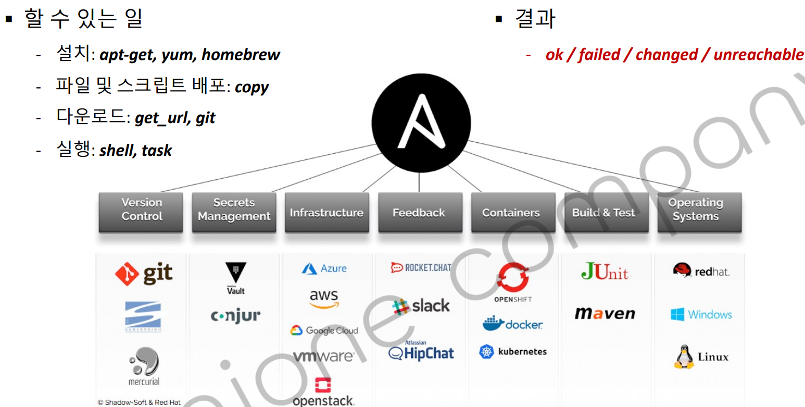
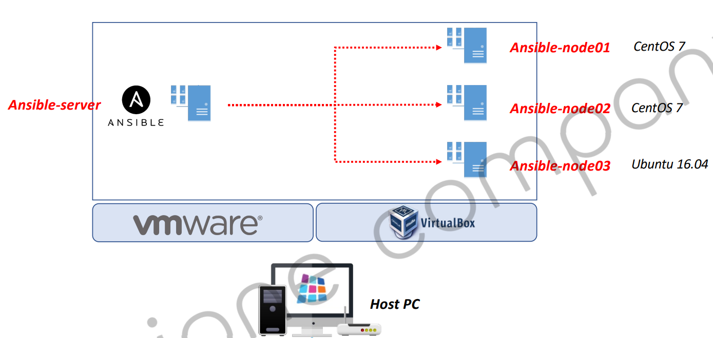
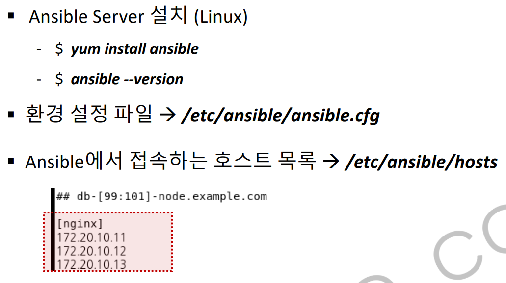

ci-cd-section-01-ch-03-ansible
IoC란? (Infrastructure as Code)
- 프로비저닝?
프로비저닝은 사용자가 요청한 IT 자원을 사용할 수 있는 상태로 준비하는 것을 말한다. 서버 자원 프로비저닝, OS 프로비저닝, 소프트웨어 프로비저닝, 스토리지 프로비저닝, 계정 프로비저닝 등이 있다.
예를 들어, 서버 프로비저닝이라면 운영 체제와 필요한 App 설치 및 라이브러리 설치하고 설정하는 것을 의미합니다.
코드형 인프라(IaC)는 IT 인프라 프로비저닝을 자동화하는 기술적인 하이레벨 코드언어입니다.
소프트웨어 애플리케이션을 개발, 테스트 또는 배포할때 서버, 운영체제, 데이터베이스 연결, 스토리지 및 기타 인프라 요소를 수동으로 프로비저닝 및 관리할 필요가 없습니다.
IaC를 통해서 소스 코드를 버전화 하듯이 인프라를 생성하고 버전화여 배포하고, 배포 도중 심각한 문제를 일으킬 수 있는 IT 환경 간의 비 일관성을 피하기 위해 이러한 버전을 추적할 수 있습니다.
정리하면 스크립트 코드로 원하는 환경을 구축할 수 있습니다.
비교 Ansible vs Terraform
Ansible
기존에 구성되어있는 서버들의 정보를 변경이나 설정등을 원하는 형태로 변경하는데 특화된 IaC 도구입니다.
구성관리 도구라고도 합니다.
엔서블을 지원하는 서드파티 모듈이 수 천개가 존재하기 때문에 이 문제점을 해결하는 용도로 사용됩니다.
문제점을 해결하기 위한 용도
문제를 발견했을 때 원인이나 복구를 하기 위해 대응할 수 있는 작업
등을 스크립트로 작성하여 기록을 해놓고 작업을 합니다.
조직들의 프로비저닝, 구성 관리, 애플리케이션의 배포를 돕기 위해 설계된 오픈소스입니다.
선언적 자동화 툴로 사용자가 인프라에서 원하는 상태를 지정하는 플레이북 (YAML 구성 언어로)을 만듭니다. 그러면 Ansible이 사용자 대신 프로비저닝(환경 구축)을 수행합니다.
구성 관리 툴(Cloud Fundation )로 나란히 작동하여 자동으로 구성 파일에 기술된 상태로 인프라를 프로비저닝하고 필요한 경우 구성 변경 사항에 대해 업데이트 프로비저닝을 변경합니다.
Terraform
인프라들의 구성을 원하는 형태로 유지하기 위해서 사용할 수 있는 오케스트레이션 도구입니다.
어떤 부분이 문제가 생겼을 경우에는 해당하는 부분을 리로드 시켜준다든가 아니면 삭제하고 새로 만든다든지 그런 작업을 할 수 있습니다. 필요한 작업들을 스크립트 형태로 작성해야하고 작성된 내용을 바탕으로 시스템 상태를 변경하거나 유지하는 작업들에 사용합니다.
테라폼도 프로비저닝 도구로 사용자 서버에 대한 엑세스 권한 관리뿐만 아니라 필요한 소프트웨어를 설치하는 작업들에도 사용할 수 있습니다.
모든 주요 클라우드 제공자와 함께 작동하며, 물리적 서버, DNS 서버 또는 데이터베이스의 위치에 상관없이 여러 제공자를 걸쳐 병렬로 리소스 구축을 자동화하도록 돕습니다.
작성된 언어에 상관없이 모든 애플리케이션을 프로비저닝할 수 있습니다.
Ansible과 다르게 구성 관리 기능 을 제공하지 않습니다.
정리
테라폼 자체는 인프라를 구축하는 용도로 많이 사용합니다. 인프라의 자체적인 내용을 구성하는 목적으로 사용되고 엔서블은 이미 구축된 서버의 구성 정보를 변경하거나 관리하는 용도로 사용되는 서비스라고 생각하면 됩니다.
엔서블은 선언적 또는 절차적으로 필요한 모든 작업들을 구성할 수 있습니다.
IaC를 사용하는 목적

- 사용하기 전
다양한 형태의 디바이스나 도구를 이용해서 서버를 관리하게 됩니다. 만약 특정 서버에 문제가 발생한다면 관리자가 새로운 서버를 추가하여 정상적으로 서비스가 지원될 수 있도록 유지시킬 수 있습니다.

- IaC 사용 후
Ansible에 서버의 목록이나 어떤 작업을 할지 작성된 스크립트 파일이 있습니다. 서버가 문제가 발생할 경우 기록된 스크립트의 작업이 실행되어 서버가 추가됩니다.
IaC를 사용하면 관리자가 직접 코드로 작성하거나 GUI를 통해서 작업해야하는 과정을 코드를 통해서 작업할 수 있습니다.
우리가 Ansible을 사용하는 이유

IaC를 가지고 있는 서버와 관리해야하는 서버를 클라이언트라고 가정을 했을 때 클라이언트에서 우리가 메인 서버(IaC 보유 컴퓨터 )로 정보를 전달받기 위한 에이전트가 필요합니다.
그래서 서로 간에 프로토콜(통신 규약 )을 통해서 통신을 하여 어떤 작업을 진행할지 결정을 메인 서버에서 결정해야합니다.
Ansible을 사용하면 클라이언트(관리 대상 서버 )가 에이전트가 필요가 없다는게 큰 특징입니다.
에이전트가 필요없는 이유
컨테이너 환경은 리눅스 기반으로 운영이 되고, 리눅스는 기본적으로 파이썬이 설치되어있습니다.
Ansible은 파이썬의 네트워크 모듈을 통해서 메인 서버와 클라이언트가 통신하기 때문에 별도의 추가적인 에이전트가 필요없다고 보는게 맞습니다.
현재는 테라폼도 많이 사용하지만 테라폼 자체가 가진 특징과 엔서블이 가진 특징이 서로 다르기때문에 개발자가 필요한 부분만 선택해서 사용하면 됩니다.
엔서블은 여러 개의 서버를 효율적으로 관리할 수 있도록 지원해주는 환경 구성 자동화 도구입니다.
그래서 Configuration Management 또는 Deployment나 Orchestration 도구라고 합니다.
IT의 인프라 스트럭처를 자동화하는데 사용합니다.
- Orchestration 란 ?
컴퓨팅에서 시스템 및 서비스를 자동으로 조정하고 관리하는 프로세스를 가르키는 용어

기존 Jenkins 방식
기존 도커가 실행되고 빌드된 결과물이 배포된 상태라면
이유는 도커 컨테이너를 기동할 때 이름이 동일할 경우 , 포트가 동일할 경우 등 문제가 발생되어 두번째 작업부터는 젠킨스가 동작하지 않습니다.
이런 경우 기존에 동작중인 컨테이너를 중지하거나 여러 번 젠킨스 빌드를 하더라도 지속적으로 그 작업이 반응할 수 있도록 설정하면 됩니다.
- 엔서블을 사용하는 목적
기존에 코어에서 기동되던 도커 컨테이너를 다시 기동하거나 중지하고 다시 기동하거나 이미지를 다시 배포하거나 이런 용도로
Configuration Manangerment나Deployment를 관리해주는 용도로 도입하려고 합니다.
엔서블 특징

- 왼쪽
사용하기가 간단합니다.
에이전트가 없기 때문에 별도로 관리하고자 하는 대상 서버에 에이전트를 설치할 필요가 없습니다.
- 오른쪽
Ansible 서버는 애플리케이션을 배포하거나 구성 정보를 변경하는 용도로 사용됩니다.
- 위쪽
프로비저닝(환경 구축)이나 오케스트레이션 도구에서 사용할 수 있습니다.
Push based
작업되어진 내용을 우리가 관리하고 있는 대상 서버들에게 push형태로 데이터를 전달합니다.
푸쉬 형태으로 데이터를 전달할 때는 서버와 각각 관리대상 서버의 사이의 통신은 파이썬에 있는 ssh 프로토콜을 가지고 데이터를 주고 받고 있습니다.
엔서블이 할 수 있는 일

설치
리눅스에서 우리가 apt라는 패키지 관리 프로그램이나 유미등 패키지 관리프로그램을 통해서 필요한 소프트웨어나 서비스를 설치할 수 있습니다.
윈도우 같은 경우 웹 브라우저를 통해 설치하는 방식이라 설치 작업을 자동화 하기 어렵습니다.
초퀄리티를 활용해서 사용할 수 있지만, 리눅스 OS를 기본으로 사용합니다.
복사,다운로드,실행
파일 또는 스크립트 또는 프로그램 랭기지의 결과물을 복사하는 작업이나 git에서 다운로드를 받아오는 작업 혹은 작성된 shell script를 실행해주는 작업을 할 수 있습니다.
정리
엔서블 서버에서 관리하는 대상은 프로그램을 다운 받고, 복사하고, 작성된 shell 스크립트를 실행하여 시스템을 제어할 수 있다는 이야기입니다.
그 외
버전 관리, 컨테이너 관리, 빌드 및 테스트, 운영 체제도 다 지원합니다.
버전 관리는 Git을 통해서 관리 할 수 있습니다.
인프라에서는 AWS뿐만 아니라 다른 클라우도도 마찬가지로각각의 클라우드 서비스들을 사용함에 있어서 필요한 라이브러리, 연동을 쉽게 할 수 있는 라이브러리가 지원됩니다.
쿠퍼네틱스나 도커도 지원하여 제어할 수 있습니다.
엔서블의 결과값
엔서블을 우리가 명령어로 실행을 했을 때 결과값이 상당히 직관적으로 알려줍니다.
- OK
명령어 또는 작업이 성공적으로 완료되었음을 나타냅니다.
- FAILED
명령어 또는 작업이 실패했음을 나타냅니다.
- CHANGED
명령어가 성공적으로 실행되었으며, 적용된 대상의 상태가 변경되었음을 나타냅니다. 이는 명령어가 적용된 대상의 상태를 변경하거나 수정했다는 것을 의미합니다.
- UNREACHABLE
명령어를 수행할 수 없는 상태인 경우에 반환됩니다. 이는 대상 호스트에 연결할 수 없는 등의 문제로 인해 명령어를 실행할 수 없는 상태를 의미합니다.
4가지 상태 코드값만 반환합니다.
구성도 예시

호스트 PC는 윈도우나,Mac OS를 생각하면 됩니다.
윈도우 환경에서 엔서블 서버를 설치하는건 까다롭기 때문에 가상화 기술로 리눅스를 설치하여 관리합니다.
엔서블 서버가 준비된 상태에서 엔서블이 관리하는 대상 서버를 각각 노드 1~3 서버라고 할 때, 에이전트로 파이썬만 설치되어 있다면 통신하는데 제약이 없습니다.
파이썬 상태에서 ssh만 사용할 수 있는 상태가 된다면 엔서블 서버가 대상 서버에 전달하는 명령어를 바로 실행할 수 있습니다.
엔서블을 사용하기에 앞서
서버 운영체제는 리눅스를 권장하고, 윈도우 상태라면 VM을 통해서 리눅스를 설치하거나 도커로 실행할 수 있습니다.
엔서블 설치

엔서블을 설치하면 두 가지 파일을 기억해야합니다.
엔서블 자체의 환경 설정 파일 위치 (
/etc/ansible/ansible.cfg)엔서블에서 대상 서버의 목록을 관리파일 위치 (
/etc/ansible/hosts)
목록을 IP 나 hostname으로 기록할 수 있습니다.
[nginx]처럼 그룹을 만들고 그 아래에 관리할 서버의 ip주소를 입력하여 관리할 수 있습니다.
그룹명으로 관리를 할 수 있습니다.
그룹명은 자유롭게 변경할 수 있습니다.